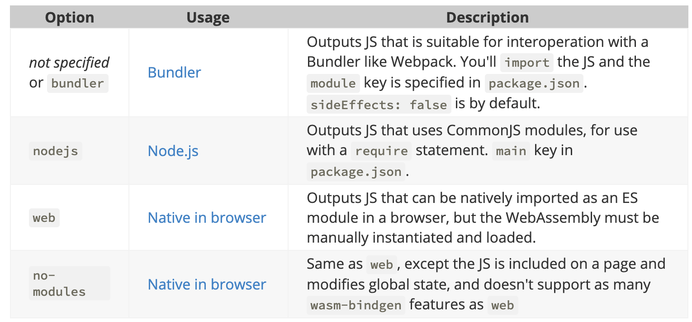

Rust and WebAssembly
记录一些 Rust 与 Wasm 的交互细节。
- 前置依赖：
- wasm-pack：可用于编译 Rust 项目到 Wasm；
- cargo-generate：使用已有 Git 仓库为模板创建项目；
- npm。
- 创建项目：
cargo generate --git https://github.com/rustwasm/wasm-pack-template
- 编译 & 测试：
wasm-pack build
# build with debugging symbols (in the "name" custom section).
wasm-pack build --debug
wasm-pack build --target [nodejs|web|bundler|no-modules]
wasm-pack test --chrome --headless
wasm-pack login # login to NPM.
- 整合 Web：
# create a "www" web project in the current Rust source folder.
npm init wasm-app www
- 被
#[wasm_bindgen]宏标记的 Rust 类型会被导出暴露给 JavaScript 环境。 - 通过 Rust 生成的 Wasm 函数不能返回借用的引用（*error: cannot return a borrowed ref with #[wasm_bindgen]*）。
- 可以使用诸如 perf 等工具来分析原始 Rust 代码在本地平台上的执行表现，从而找到性能痛点再予以优化。
perf record -g <path_to_binary> --bench
- 生成 LLVM-IR：
cargo rustc --release -- --emit llvm-ir
find target/release -type f -name '*.ll' # find .ll files.
- 一些可用于生产环境的“侵入式”优化技巧：
- 避免使用 String Formatting，如
format!\to_string等； - 避免 Panicking（比如在解包
Option或Result时，选择在失败时调用std::process::abort结束进程而非 panic）；
#[inline]
pub fn unwrap_abort<T>(o: Option<T>) -> T {
use std::process;
match o {
Some(t) => t,
None => process::abort(),
}
}
- 避免使用 Rust 默认的 dlmalloc 内存分配器，选择性使用 wee_alloc 作为替代（牺牲分配速度换取代码体积）；
- 使用 trait object 代替泛型参数（牺牲性能换取代码体积）；
- 配合使用 wasm-snip 与 wasm-opt 工具。
- wasm-pack 的三种编译目标模式：

评论 | Comments